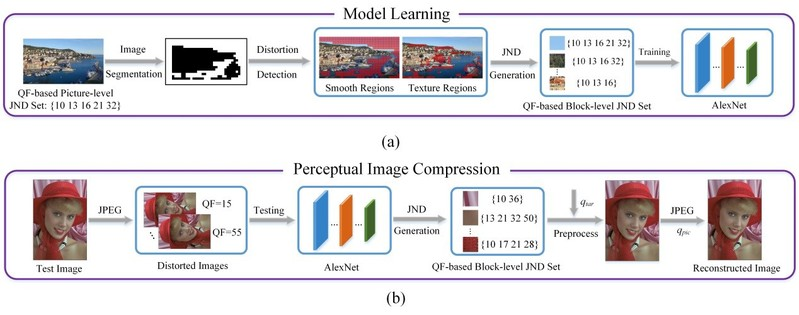
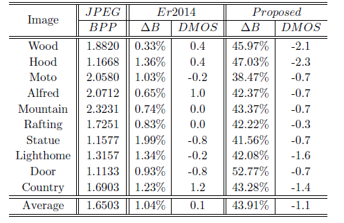
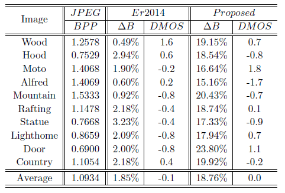
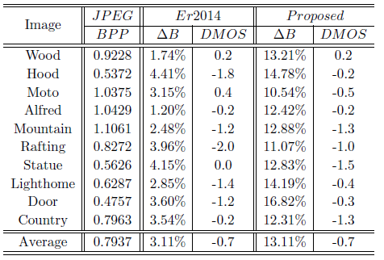
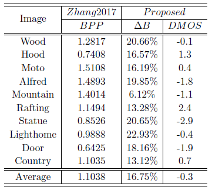

Perceptual Image Compression with Block-level Just Noticeable Difference Prediction
Tao Tian, Hanli Wang, Sam Kwong and C.-C. Jay. Kuo
Overview:
Nowadays, it becomes convenient for people to capture and upload abundant images to the Internet by personal devices. Therefore, it is a gargantuan challenge to store and transmit these huge amounts of images. To alleviate this challenge, a block-level perceptual image compression framework is proposed in this work, including a block-level just noticeable difference (JND) prediction model and a preprocessing scheme. The experimental results demonstrate that the proposed block-level perceptual image compression method is able to achieve 16.75% bit saving as compared to the state-of-the-art method with similar subjective quality.
Method:
The proposed block-level perceptual image compression framework is shown in Fig. 1, including the procedure of model learning in Fig. 1(a) and the procedure of perceptual image compression in Fig. 1(b). First, an OTSU based block-level JND generation algorithm is designed to generate block-level JND ground truth according to the picture-level JND values of the MCL-JCI dataset [1]. Second, a prediction model is developed by employing AlexNet [2] to adaptively predict the JND label for image blocks. Then, a processing method is designed to deduce the final block-level JND values. Third, a block-level perceptual coding scheme is devised to perceptually encode images for compression efficiency improvement. Specifically, the QF for picture-level compression is re-determined as the max perceptual QF of all the image blocks when the target QF is given. Then, for each image block, a preprocessing algorithm is proposed to make the number of non-zero quantized DCT coefficients with the calculated picture-level QF being identical to that generated by the block-level perceptual QF, so that the compression efficiency is improved with perceptual image quality almost intact.

Fig. 1. The flowchart of the proposed block-level perceptual image compression framework. (a) Model learning procedure. (b) Image compression procedure.
Results:
The proposed block-level perceptual compression approach is compared with several image compression methods including JPEG compression and Er2014 [3], the results are shown in Table 1-Table 3. The performances of these competing methods are evaluated from two aspects: compression efficiency and perceived quality. △B denotes bit saving, and DMOS means the perceived quality difference. The results indicate that the proposed method can achieve significant bit saving with similar perceived quality.
Table 1. Performance comparison of Er2014 [3] and the proposed method at QF = 75

Table 2. Performance comparison of Er2014 [3] and the proposed method at QF = 50

Table 3. Performance comparison of Er2014 [3] and the proposed method at QF = 30

In addition to the Er2014 [3] approach, the performance of the proposed method is also compared to that of the Zhang2017 [4] approach, the results are shown in Table 4. It can be seen that the average DMOS is merely -0.3 and the bit saving △B obtained by the proposed method over Zhang2017 is 16.75%, which indicates the superiority of the proposed method.
Table 4. Comparison with Zhang2017 [4] under similar visual quality

Source Code:
原站插图：图片暂留白BLJND1.0.zip
Citation:
Please cite the following paper if you find this work useful:
Tao Tian, Hanli Wang, Sam Kwong, and C.-C. Jay. Kuo, Perceptual Image Compression with Block-level Just Noticeable Difference Prediction, ACM Transactions on Multimedia Computing, Communications, and Applications, vol. 6, no. 4, Article 126, Jan. 2021.
References:
L. Jin, J. Y. Lin, S. Hu, H. Wang, P. Wang, L. Katsavounidis, A. Aaron, and C.-C. J. Kuo, Statistical Study on Perceived JPEG Image Quality via MCL-JCI Dataset Construction and Analysis, Elec. Imaging, vol. 9, pp. 1– 9, Feb. 2016.
A. Krizhevsky, I. Sutskever, and G. E. Hinton, Imagenet Classification with Deep Convolutional Neural Networks, in NIPS’12, Dec. 2012, pp. 1097 – 1105.
F. Ernawan and S. H. Nugraini, The Optimal Quantization Matrices for JPEG Image Compression from Psychovisual Threshold, J. Theoretical Appl. Inf. Technol., vol. 70, no. 3, pp. 566 – 572, Dec. 2014.
X. Zhang, S. Wang, K. Gu, W. Lin, S. Ma, and W. Gao, Just-noticeable Difference-based Perceptual Optimization for JPEG Compression, IEEE Signal Process. Lett., vol. 24, no. 1, pp. 96 – 100, Jan. 2017.